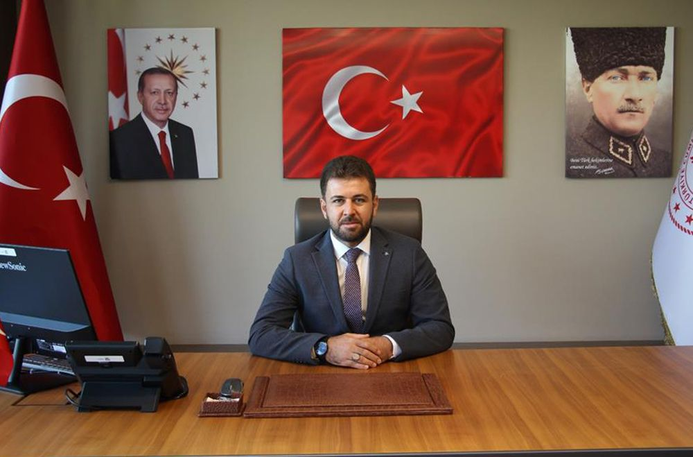

Onkolojide Dijital Bir
Zırh İnşa Ediyoruz
Onkoloji alanında en yüksek mortalite oranına sahip beyin metastazlarının yönetiminde; uzman hekimlerin iş yükünü optimize eden, derin öğrenme tabanlı bütüncül bir karar destek mekanizması geliştiriyoruz.
TEKNOFEST 2026 Yolculuğumuz
FIRAT-NEUROTEC takımı olarak, "İnsanlık Yararına Teknoloji" vizyonuyla yola çıktık. Amacımız, sağlık sektöründeki radyolojik teşhis sürelerini kısaltmak ve hekimlerimizin en güçlü dijital asistanı olmaktır.
Geliştirdiğimiz 3T Analiz Ekosistemi (Tanı, Takip, Tedavi), tıbbi yapay zeka alanında yalnızca bir yazılım değil, hastanın tedavi yolculuğuna başından sonuna kadar eşlik eden yenilikçi bir protokoldür.
Teşekkür
Projemizin temel çalışma konusunun belirlenmesinde ve 3T vizyonunun klinik temellere oturtulmasında sağladıkları değerli tıbbi rehberlik için;
Uzman Doktor Oğuz ALTUNYUVA'ya ve Elazığ Fethi Sekin Şehir Hastanesi Başhekimi Uzman Doktor Fatih DEMİR'e en içten teşekkürlerimizi sunarız.

Akademik Şeffaflık
Proje içerisindeki şekillerin oluşturulmasında yapay zekâ araçlarından faydalanılmıştır.